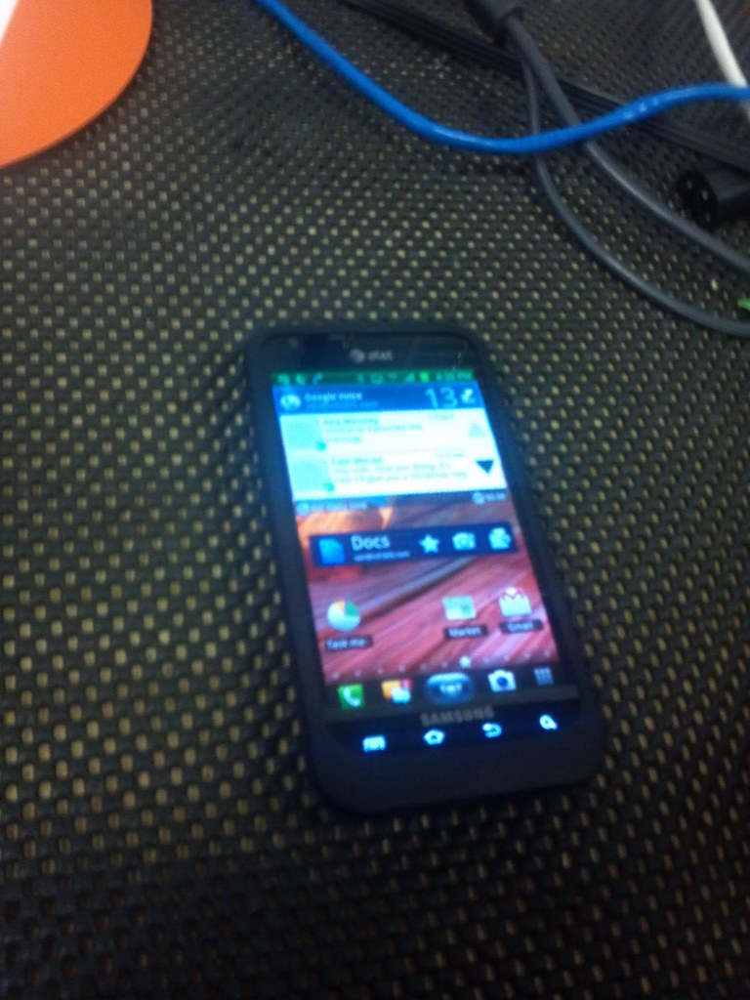

Grow on Pinterest from zero as a beginner. This guide covers your business account, boards, pin design, posting, and steady growth.
You grow on Pinterest by opening a business account, creating boards around one clear topic, and posting fresh pins on a steady schedule. You learn how to grow on Pinterest for beginners by serving one audience with useful pins every week. You need only a free account and a phone to start.
Most beginners pin random images and they mix many topics on one board. They post in bursts and then they vanish for weeks.
You finish this guide with a clear niche, boards that rank in search, and pins that bring steady clicks. You gain the skill to grow a small account into a steady stream of visitors.
You open a Pinterest business account for beginners by switching your personal account or creating a new one. You learn how to grow on Pinterest for beginners by filling in your profile name, bio, and website link first. You add a clear profile photo and you confirm that your account shows as a business account.
A business account works because it unlocks analytics and rich pins that show more detail. You see which pins earn saves and clicks and you learn what your audience loves. You keep your bio short and you name the topic you pin about most.
Ayesha from Lahore shows this idea in action with a business account for her henna designs. She switches her account in two minutes and she adds a bio that names henna for beginners. She links her small shop page and her first visitors arrive from Pinterest within a week.
You pick one niche when you learn how to grow on Pinterest for beginners with a clear focus. You use Pinterest boards and keywords for beginners by naming each board with words that people search. You list ten pin ideas for your niche and you check that you can make each one with your phone.
One niche works because the same viewers return for the same kind of pin each week. You build trust fast and Pinterest learns who loves your pins. You avoid a mixed profile that confuses new viewers and hides your best work.
Bilal from Karachi shows this idea in action with boards about simple cricket tips for new players. He names each board with a clear search word and he fills it with ten useful pins. His boards earn saves each week and his viewers ask for new tips in the comments.
You design pins with Pinterest pin design for beginners by keeping the image tall and the text short. You use a clear title in large letters and you add one image that shows the result. You keep two colours and one font so the pin feels calm and clear.
A clear pin works because viewers scroll fast and they stop only for a pin that reads in two seconds. You earn the click that sends a visitor to your page. You test two designs for the same pin and you keep the one that earns more saves.
Sana from Islamabad shows this idea in action with a tall pin for a simple recipe. She shows the finished dish in the top half and she writes the dish name in large letters. Her viewers save the pin and they cook the recipe the same evening.
You set a Pinterest posting schedule for beginners when you learn how to grow on Pinterest for beginners with steady habits. You pick three days each week and you post fresh pins at the hour when your viewers browse most. You make two pins in one session and you keep one ready for the next day.
A steady schedule works because Pinterest shows fresh pins to more people over time. You build a habit that keeps your account active and your ideas fresh. You miss a day sometimes and you return the next day without losing your rhythm.
Usman from Faisalabad shows this idea in action with three pins each week for his tailoring shop. He designs on Sunday and he posts on Monday, Wednesday, and Friday. His shop pins reach new viewers each week and his customers mention Pinterest when they visit.
You open the Pinterest analytics page each Sunday and you note your best pin of the week. You check saves, clicks, and new followers for each pin. You write down the topic of the best pin and you plan two more pins in that style.
Numbers work because they show real viewer behaviour instead of guesses about your pins. You repeat the topics that earn saves and you drop the ones that viewers skip. You improve one small part each week and you watch the trend over a full month.
Hira from Rawalpindi shows this idea in action with a beauty tips account that she checks each Sunday. She finds that her short tips earn more saves than her long guides. You read a short guide about Pinterest keywords next Pinterest keywords for beginners and you test one new board idea each week.

You start on Pinterest with zero followers and you grow by posting useful pins each week. You pick one niche and you serve one audience with fresh pins. You gain your first hundred followers by staying steady for a full month.
You follow a Pinterest posting schedule for beginners with three pins each week. You pick three days and you post at the hour when your viewers browse most. You design two pins in one session and you keep one ready for the next day.
You open a Pinterest business account for beginners to unlock analytics and rich pins. You see which pins earn saves and clicks and you learn what your audience loves. You keep your bio short and you name the topic you pin about most.
You use Pinterest pin design for beginners to keep the image tall and the text short. You use a clear title in large letters and you add one image that shows the result. You test two designs for the same pin and you keep the one that earns more saves.
You keep a beginner pin tall and you aim for an image that readers scan in two seconds. You cut the slow parts and you keep the title clear so viewers stay. You test tall and short versions of the same idea and you keep the size that earns more saves.
You pick one niche so the same viewers return for the same kind of pin each week. You use Pinterest boards and keywords for beginners to name each board with words that people search. You list ten pin ideas for your niche and you check that you can make each one with your phone.
You open the analytics page each Sunday and you note your best pin of the week. You check saves, clicks, and new followers for each pin. You write down the topic of the best pin and you plan two more pins in that style.
You grow on Pinterest without ads by posting useful pins on a steady schedule. You design tall pins and you earn reach from saves and clicks. You improve one small part each week and you watch the trend over a full month.
You open a business account and you build boards around one clear niche. You design tall pins and you post them on a steady schedule each week. You learn how to grow on Pinterest for beginners one pin at a time and you build a steady stream of visitors with care.
Open Pinterest today and create your first board this week.